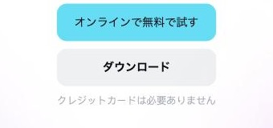
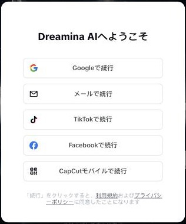

曲から動画 面談の議事録
マリアさんが自分で動画を作れるようになるまでの道を、今日からの順番に並べました。いちばん厚く書いたのは、パソコン選びと、買った日の設定です。
読み物版（要約・マーカー）を読む面談の中身を読みやすく編集したものです。約6分 今日の資料スライドを見る面談で見せた白い龍の見本と、進め方の資料今日決まったこと
- つくりたいのは、自作曲に付ける動画の第1作目。参考は、龍が滑らかに駆け回るTikTok。イメージは和風の白い龍。
- ツールは、画像と動画づくりに Dreamina、プロンプトの下書きと相談に Claude。参考動画は「何を連想するか」を言葉にしてもらうところから始める。
- 動画づくりはスマホだけでは難しいので、スマホの買い替えより先にパソコンを用意する。
- まず自分で1回やってみる。詰まったら相談する。
- ユウキから、パソコンの条件に合う候補と買い方のまとめを共有する（このページのパソコン選びの章が、その最初の版）。
マリアさんが今やること
面談で話した内容と、そのあとに調べた情報を、ステップにして並べました。面談で話したは今日の会話で出た内容、調べて追加は面談後に公式ページなどで確かめた内容です。
予算の上限を決める
面談で話したパソコンは先に買う。Macは高く、Windowsは安いものもある、という話でした。まず「いくらまでなら出せるか」を1つ決めると、次のステップがすぐ終わります。
パソコンを3台から選ぶ
調べて追加先に「パソコンの用語を、台所でたとえると」の章でスペック表の読み方をつかみ、そのあと「パソコン選び」の章で、秋葉原のPCコンフルの今週の特価品から、メモリ16GBの3台を載せました。予算の上限から選べます。
買う前に確かめる
調べて追加中古を選ぶ場合の確認点を、同じ章にまとめました。
買った日に設定する
調べて追加アカウントとアプリを6つの順番で用意し、最後に5秒の動画を1本書き出します。「買った日の設定」の章です。
参考のTikTokをClaudeに言葉にしてもらう
面談で話した参考動画のリンクをClaudeに渡して、次のように頼みます。
- この動画のイメージを言葉にして。何を連想するか、並べて。
- このような動画を、白い龍で作りたい。そのためのプロンプトを書いて。
出てきた説明の中に、連想した作品名（面談ではハウルの動く城、ロード・オブ・ザ・リング）が入っていたら、動画の方向が決めやすくなります。参考のTikTokは「言葉にする材料」として使い、映像そのものは投稿しません。
Dreaminaで白い龍の絵を作り、動かす
面談で話したステップ5で出たプロンプトをDreaminaに入れます。1枚目は画像で作り、その絵を動かして5秒ほどの動画にします。気に入らなければ言葉を直して、少しずつ形にしていきます。Dreaminaには無料で使える枠があります（公式FAQ。数字は変わるので画面で確認）。
曲を乗せて、書き出して、投稿する
調べて追加面談では編集アプリの話は出ていません。CapCutなら、Dreaminaと同じ運営で、無料で始められます。曲の20秒前後に合わせて動画をつなぎ、書き出して、YouTubeとTikTokに載せます。
曲を収益化する予定があれば、Dreaminaの利用規約（商用利用）を登録したあとに読んでおくと安心です。
詰まったら相談する
面談で話した1回やってみて、できなかったところを相談します。オンラインのレッスンと、パソコンを買いに行く手伝いは、「ユウキに頼む場合のメニュー」の章にまとめました。
ユウキに頼む場合のメニュー
面談で話した続けて相談したいとき、オンラインのレッスン、代行、パソコンを買いに行く手伝いを用意する、という話でした。内容と金額をまとめます。
オンライン
オンラインレッスン
この議事録のステップを、画面を見ながら一緒に進めます。1回ごとに宿題を決めます。
1本目を一緒に作る
白い龍の1本目を、Claudeでプロンプトを作るところから書き出しまで、2回で作ります。2本目からは自分で作れる状態を目指します。
動画づくりの代行
曲を預かって、動画をこちらで作って渡します。
オフライン（対面）
パソコンの購入補助と、その後のセットアップ
秋葉原のPCコンフルなどの店で、実物の画面とキーボードを一緒に確かめて選びます。買ったあとは「買った日の設定」の1〜6を、一緒に進めます。
オンラインのレッスンは60分で5,000円、対面は購入補助とセットアップを合わせて20,000円です。1回ごとに予約して受けます。パソコンの購入代金とツールの利用料は、別にかかります。
パソコンの用語を、台所でたとえると
スペック表には、メモリ、SSD、CPUなど、聞き慣れない言葉が並びます。パソコンを「料理の台所」にたとえると、それぞれの役目が分かります。動画づくりは「料理」、動画や曲のファイルは「食材」です。
どれだけ手が速いか
パソコンの頭脳です。料理人の腕が良いほど、同じ料理が速く仕上がります。「Ryzen」「Core i5」「M5」などの名前で書かれます。
今回: 3台とも第10〜11世代のCore i5〜i7です。ブラウザとCapCutを動かす用途を想定していて、名前の細かい数字は比べなくて大丈夫です。
同時に広げられる量
いま作業している物を、並べておく場所です。広いほど、ブラウザ、Claude、CapCutを開いたままでも手元が散らかりません。電源を切ると、作業台は片付きます（保存はされません）。足りないと、動きが遅くなります。
今回: CapCut公式の推奨は8GB以上。余裕を見て16GBを目安にしました。3台とも16GBです。
しまっておける量
作った動画、曲、写真、アプリをしまう場所です。大きいほどたくさん溜められます。「SSD」は、出し入れが速いタイプの倉庫です。入り切らない分は、外付けSSDやクラウドに預けられます。
今回: ThinkPad X13 Gen1とEliteBook 830 G8が256GB、Latitude 7320が512GBです。動画を溜めたいなら大きいほうが安心です。
一度に見える範囲
大きいほど、編集の画面が広く見えて作業しやすくなります。小さいほど軽く、持ち運びに向きます。動画も画像も作る作業はネットの向こうで行うので、パソコンの性能より、画面の見やすさが効きます。
今回: 3台とも13.3型のフルHDです。
買い物かごの重さ
家で使うだけなら、気にしなくて構いません。外に持ち出すなら、軽いほうが楽です。バッテリーは使うほど減る消耗品で、中古は減り具合の確認が要ります。
今回: 3台とも、出典の記事には重さの記載がありません。持ち歩くなら、店で持って確かめてください。
操作の作法
台所の道具の置き場所や、使い方の決まりのようなものです。WindowsとMacで、ボタンの位置や使い方が少し違います。CapCutもClaudeもDreaminaも、どちらでも使えます。
今回: 3台ともWindows 11 Proです。Macにする場合は、参考の整備済製品になります。
材料を運ぶ道
Dreaminaで動画を作る作業は、ネットの向こうで行います。家のWi-Fiが安定していると、待ち時間が短く、途中で止まりにくくなります。パソコン選びと同じくらい、家の回線が効きます。
今回: パソコン選びと別に、家のWi-Fiが安定しているかを確かめます。
「メモリが足りない」とは、こういうこと
作業台が狭いと、ブラウザ、Claude、CapCutを同時に広げきれません。置けない分は倉庫（SSD）に出し入れしながら作業するので、動きが遅くなります。作業台が広ければ、全部を広げたまま作業できます。下は、たとえ話の図です。実際の使用量ではありません。
メモリが少ない（狭い作業台）
メモリが多い（広い作業台）
パソコン選び（秋葉原のPCコンフルの中古）
面談で話したMacは型落ちでも発売から5年以内まで。古すぎると今のAIが使いにくくなる。Windowsは安いノートがあり、都内なら秋葉原の中古店も見られる。
この話をもとに、秋葉原の中古専門店「PCコンフル」の今週の特価品から、メモリ16GBの3台を選びました。新品の16GB・512GBは10万円前後からですが、中古なら3万円台からあります。価格と在庫は、下の出典記事の掲載日（10月8日・15日）のものです。
Lenovo ThinkPad X13 Gen1
- 中身
- 第10世代Core i5 ／ メモリ16GB ／ SSD 256GB
- 画面
- 13.3型 フルHD
- OS
- Windows 11 Pro
- 店・在庫
- PCコンフル3号店 ／ 20台（10/15掲載）
hp EliteBook 830 G8
- 中身
- 第11世代Core i5 ／ メモリ16GB ／ SSD 256GB
- 画面
- 13.3型 フルHD
- OS
- Windows 11 Pro
- 店・在庫
- PCコンフル本店 ／ 10台（10/15掲載）
DELL Latitude 7320
- 中身
- 第11世代Core i7 ／ メモリ16GB ／ SSD 512GB
- 画面
- 13.3型 フルHD
- OS
- Windows 11 Pro
- 店・在庫
- PCコンフル本店 ／ 7台（10/8掲載）
3台とも毎週の「週末特価品」です。入れ替わるので、行く前に店のX（2号店・4号店）か店頭で、在庫を確かめてください。記事には「会計時に『デイリーガジェットを見た』と言えば800円OFF（一部商品は対象外）」とも書かれています。
予算で選ぶ目安
16GBで最安です。SSDは256GBなので、動画は外付けSSDやクラウドに逃がします。
世代が新しく、動作がきびきびしやすい1台です。SSDは256GBです。
SSDが512GBで、動画を本体に溜めやすい1台です。
ほかの選び方（参考）
10月21日に販売ページで確かめた価格です。
メモリは16GBを目安にする
CapCut公式のヘルプでは、Windows版は「8GB以上のRAMを推奨」とあります。ブラウザでDreaminaとClaudeを開いたまま編集するので、余裕を見て16GBの3台にしました。出典: CapCut公式ヘルプ
動画も画像も生成はブラウザの先で行うので、パソコンの性能より、画面の大きさと通信の安定のほうが効きます。調べて追加
店で聞くこと・確かめること
- 保証の期間と、保証の内容（店によって違います）。
- バッテリーの減り具合。バッテリーは消耗品で、中古は減っていることがあります。
- Windows 11が入っているか。
- 画面とキーボードに傷や不具合がないか。その場で電源を入れて確かめます。
- Microsoft Office（WordやExcel）は入っていないことが多いです。今回の用途では不要です。
参考までに、ソフマップの中古の規定では、到着から10日以内の連絡なら使用後でも全額返金（一部商品を除く）、バッテリーなどの消耗品は動作保証の対象外です。出典: ソフマップ 中古のご注意（10/21確認）
面談で話したIT化に使える補助金があるかもしれません。プロフィールを伝えると、AIが探してくれます。買う前に一度聞いてみると安心です。
買った日の設定
電源を入れてから、順番に進めます。1〜5は無料です。
パソコンの初期設定と更新
画面の案内に従って、Wi-Fiにつなぎ、Windows（またはMac）の更新を最後まで済ませます。中古の場合は、先にバッテリーの持ちを確かめます。
ブラウザを用意する
ふだん使うブラウザ（ChromeかSafari）を入れ、ブックマークバーを出します。
Claudeに登録する（無料プラン）
入口: https://claude.ai/
最初は無料で足ります。使う上限に何度も当たるようになってから、有料を考えます（面談でゆみパン先生とユウキから出た話です）。アプリ版が必要になったら、公式ヘルプでは Windows 10以降、macOS 13以降が対象です。
CapCutを入れる
入口: https://www.capcut.com/ja-jp/

①① 「ダウンロード」を押すと、パソコン用のアプリが入ります。その上の「オンラインで無料で試す」は、アプリを入れずにブラウザで使うほうです。パソコンが重いときの代わりになります。
Dreaminaに登録する
入口: https://dreamina.capcut.com/ja-jp

①① 画面に出る登録の選択肢のうち、ふだん使っているGoogleアカウントの「Googleで続行」が一番かんたんです。メールで登録する場合は、その下の「メールで続行」を選びます。
無料枠の説明: Dreamina公式FAQ（毎日の無料クレジットがあると書かれています。数字と条件は変わることがあるので、登録後の画面で確かめてください）
試しに1本、書き出す
- Claudeに、参考のTikTokのリンクを渡して、イメージを言葉にしてもらう（STEP 5）
- Dreaminaで、白い龍の画像を1枚作る
- その画像を、5秒の動画にする
- CapCutに動画を入れ、曲を乗せる
- 「書き出し」で保存する（まずは完成度を求めず、最後まで通すことが目的です）
MacもWindowsも、1〜6の流れは同じです。Dreaminaのログイン画面は、使う時期によって選択肢が変わることがあります。
面談で話した内容
今日の資料スライドを見る面談で見せた白い龍の見本と、進め方の資料
マリアさんの状況
- 会社で働きながら、占いとライブ配信をしている。
- 音楽はAIで作る。「おまかせ」ではなく、英語で細かく指定する。
- 共同制作者と、音楽用の別アカウントを作る。その第1作目の動画を作りたい。
- 動画は作ったことがない。やり方を覚えて、自分で作りたい。
- パソコンは、15年ほど前のWindowsとMacしかない。スマホはiPhone 13 mini。
参考動画と見本
- 参考は、龍が滑らかに駆け回るTikTok。富士山の横を通るなど、運気が上がる雰囲気。
- 投稿先はYouTubeもTikTokも。長さは参考と同じ20秒台でいい。
- 見本は、Dreaminaで作った和風の白い龍。動かすときの指示は、文章でDreaminaに伝える。いろいろな角度で動き回る映像も、同じやり方で作る。
AIの使い方
- Claudeは、質問に答える相談員というより、仕事を頼む社員のような使い方。前回の続きを覚えていて、時間を決めた作業や、投稿の予約も頼める。
- ゆみパン先生は、ホームページの分析や授業の組み立てに使っている。
- 有料プランとの違いは、使える量の上限。最初は無料でいい。
- 面談の最中も、ユウキは文字起こしをClaudeにさせていた。この議事録とパソコン選びのまとめは、そこから作っている。
パソコンの話
- スマホだけで進めるのは難しい。スマホの買い替えより、パソコンが先。
- Macは型落ちでも発売から5年以内。古いと今のAIが使いにくくなる。Windowsには安いノートもある。
- 都内なら、秋葉原に中古のパソコン屋が多い。
- 補助金が使えるかもしれない。AIに聞くと探してくれる。
このあと
- ユウキから、このページと、パソコンの候補・買い方のまとめを共有する。
- オンラインのレッスンと、パソコンを買いに行く手伝いは、このページの「ユウキに頼む場合のメニュー」にまとめた。
- 同じことで困っている人がいたら、ユウキを紹介してほしい。
文字起こし
要約
- 参考動画のリンクをClaudeに渡し、何を連想するかを言葉にしてもらう
- 出てきた言葉をDreaminaに入れ、少しずつ形にしていく
- Claudeは無料プランから始め、上限に当たってから有料を考える
- AIの動画づくりはスマホだけでは難しく、先にパソコンを用意する
- 自分で1回やってみて、詰まったところだけ相談する
字幕の原文を開く（整形のみ・約30分）
Google Meetの自動字幕です。誤変換は固有名詞だけ直し、発言の中身は足していません。意味が取れない所は字幕のまま残しています。
マリアこんにちは。
ユウキはーい、おはようございます。よろしくお願いします。
マリアよろしくお願い致し。 ません。この度はご縁をいただき。
ユウキいえいえ、大丈夫ですよ。カメラは 今日はどうします？映さない感じですか？
マリアます。すいません。あのちょっとすっぴんなんで。
ユウキ気にしないのにまだ動けないですよ。 どうももしもーし。
マリア入れちゃった。すいません。なんか切れちゃう。すいません。
ユウキうん、はい、大丈夫ですか？ゆみパン先生も来るのかな？あれ 来ないのかな？どうなんだろう？
マリアいや、昼休みなんで昼休み 入ってから来るって言ってました。 はい、すいません。なんかありがとうございます。なんか 参考のであの15秒間っていうかあのなんて言うんですか？ TikTokって20何秒でしたっけ？30秒でしたっけ？
ユウキ多分いきなり細かい話をすると多分そっち横道 逸れちゃうと思うんで、まず
マリアあ、そうですか。はい、わかります。
ユウキそもそもになんてお呼びすればいいんですか？
マリアマリアでいいです。はい。
ユウキはい、僕は本名で勇気で大丈夫です。今どちらにいらっしゃるんです。
マリアはい、ありがとうございます。はい。 今家です。
ユウキ都内ですか？
マリア都内でする。はい。
ユウキパン屋さんとは関係ないんですか？
マリアパンちゃんですか？お友達？
ユウキではではなく、マリアさんはパン屋さんをやってるわけではないんです。ではなくて、普段はどういうことをされてる？
マリア関係ないです。関係ないです。はい。 普段はあの普通に働いてます。働いていてかつ 占い師をやってます。
ユウキあー、なるほど。その占い関係ので
マリアあとそうです。占いとライブ配信やってますね。
ユウキなるほど。なるほど。あとごめんなさい。はいうん。 うん、うんうん、なるほど で、その占い系のコンテンツに使えそうな曲をすでにお持ちで、それに それにつける動画みたいなものができたらいいなっていう。そういう経緯ですね。
マリア私が作ってます。はい。 あのまた別にアカウントを作ってちょっと。それは音楽 アカウントになるんですけど、青山マリア名義じゃなくて ちょっと 共同制作者がいて、一人でその音楽のこと、一緒にアカウントを1個作って、2人でどんどん音楽をアップしていきたい。音楽 動画とかもそれに入れたんですね。
ユウキあ、なるほど。じゃ マリアさんとしてのお名前じゃなくて、その共同で何かやって書いて時に作る 曲につける動画を作りたいと。
マリアつけるって言うか、そこにアップする動画の第1作目。
ユウキちなみにこのマリアさん自身は aiは結構使われてますとも
マリアYouTubeです。
ユウキ全然ですか？ うん。明日の使ってるなるほどね。音楽作る際に杖 aiを使うっていうのが主な使い方。
マリアそうですね。はい。
ユウキなるほど。なんか要はどういうことか っていうとね。先ほどとかそのアンケートでおっしゃってた。できれば
マリアはい。 はいはい。
ユウキやり方
マリアはい、はい、はいはい。
ユウキ覚えて自分からやりたいっていう内容ですよね。で考えると、多分 aiの全体的な知識を身につける必要があるかなと思ってするのも良いんですが。多分
マリアはいはい。
ユウキ他に例えば僕の場合は主に使ってるのが
マリアはいはい。
ユウキClaudeってご存知です。
マリアアップロードで。
ユウキはいを使ってるんですけれども僕の場合こんな感じでね
マリアはい、はい、はいはいはい。
ユウキ多分そこのノウハウも必要になってくると思うんですよ
マリアはいはい。
ユウキこういうものって自分で頑張って
マリアはいはい。
ユウキゼロから勉強していけそうです あれもしもし メンバー悪くなっちゃったかな。 入り直しましたか。
マリアすいませんね。なんか すぐ切れちゃってなんで切れちゃうんだろう。下のあれを見ようと思ったら切れ ちゃっ。
ユウキまあ大丈夫ですよそう AI
マリアてる？
ユウキに関しては結構自分で学習しながらトライ&エラーで行けそうな感じですか。
マリアそうですね。音楽作る時もあのおまかせじゃなくて 詳細プロでやってるんで英語で。
ユウキなるほどなるほどねというのは今回 僕が思ってたのは僕がもう今やり方パッとその 言った内容だけで一応聞いて銃を理解できるのであれば もう正直お金とか頂かずこれで終わりでいいなと思ったんです
マリアいやいや、いやいやはい。
ユウキでもし今後も何か そういうものが必要ってなるんであればなんか
マリアはい。
ユウキこんな感じでそのオンライン レッスンみたいな感じで1回いくら出会ってこうと思った でも 僕ももうすでに分かってるものに対して無駄ににいただくのもったいないなって と申し訳ない思うから
マリアいや、いやいや。
ユウキそこも合わせてのその認識合わせをしていく必要があるなと思っていて
マリア動画は作ったことないんですよ。作ったことないっていうの音楽をアップしてんですけど、その動く動画 動く動画は作ったなんか動く動画の作り方 教えていただければと思います。
ユウキはい、はい、はいはいはいはいはいはいはいはいはいはい ぶっちゃけ
マリアaiでね。
ユウキ大丈夫ですよ。今来たかな？今入れますね。ゆみパン先生をはいと。 もしもーしどうもどうも。
ゆみパン先生こんにちは。
マリアすんませんね。はい、ありがとう。お仕事中に。
ユウキあーね、聞きました。今え今昼休み的な感じですか？ 今2番目で声が入ってないかも。 それで今入った。
マリア聞こえてる？
ゆみパン先生てるちゃんが顔に出せないけどいい？秘密？
マリアごめんなさい。
ユウキすっぴんなんだって。
ゆみパン先生美しい人なんですよ。
ユウキ謎なの？
ゆみパン先生マジで。
マリアみんなでごめんなさい。
ゆみパン先生マジかよ。
ユウキゆみパン先生とはどういうなんか前話してた いわゆるコミュニティ的な感じのつながりですか？
ゆみパン先生いや、もうね。昔の仕事職場仲間今も繋がってますけど。
ユウキなるほど、そうだったん。
マリアお友達です。今も
ユウキださっきも背景 聞いてたらね。そのパンの一人ですから、パンとは関係なくて会社にやりながら 今 占い系のことやっていてで、他の人と共同制作で音楽を作っているから、今後 今度それにつける 曲に紐づく動画を作りたいと、そのためのそのaiを使った動画制作のノウハウを知りたい みたいなことをおっしゃってた。そこまであってますかね？ はい、ありがとうございます。で、追加で行ったのはそのもう何でしょう？aiの知識がかなり もうあるのであれば、僕がパッと今日
マリアはい、ありがとうございます。
ユウキこれで言い方教えちゃって。それでもうお金をもらわず、それで終わりでいいかな？って思ったんですけども、そのマリアさん的にいやなんかせっかくだからやっていきたい みたいなことですかね。
マリアどうしよう？せっかく1回目 作る時教えていただきたいですよね。やっぱり。
ユウキ言ってね。ぶっちゃけ。僕も動画を制作っていうのは今回のこのお仕事もらうまでは全然やってなかったんですよ。
マリアあ、そうですか？
ユウキただ今 そんな状態でも今こういう風になりました。っていうの パッと見てもらうと今画面見えてますかね？
マリアはい、見えてます。はい。
ユウキはい、はい、はいはいはいはいはいはいはいはいね。まずいただいた その参考の TikTok こんな感じのがいいな
マリアはい。
ユウキってのがこれですよね。アートえーっと
マリアそうです。
ユウキ流れないんだ。こっちでいいの？
マリア動いて何て言うかな？滑らかにあ そうです。こんな感じで滑らかに動いてるのが欲しい。こういろんなところを駆け回ってなんか 富士山の横通ったり、そういうなんか運気上昇
ユウキはい、はい、はいはいはいはいはいはいはいはいはいはい。
マリアっていうやつ。
ユウキなるほどね。これあげるのは YouTubeって言ってことはその横長これ TikTok 縦長になるんですけども、YouTubeかショート系になるんですかね？曲の長さっていうのは？
マリア全部 TikTokもYouTubeも全部あげたいんで。 曲はあの切り取りで勝手にくっつくので、なんかあの1回 参考動画見せた時、勝手に aiがいい 部分切り取ってくっつけてくれたんですけど。
ユウキつまりアップするのはじゃ短い動画になるって事ですかね？それとも。
マリアどうなんだろう？あのこの参考のやつが20何秒だったと思うんですけど、本物
ユウキはい、はい、これはそうですね。超えて TikTok だから短い。
マリア本物 ね。それぐらいでいいんですよね？それぐらいでいいです。
ユウキそうなんだ。なるほど。なるほどでね。そうそうでイメージ どんな感じの？そうそう、和風の白い龍にしたい みたいな。まず1枚目 画像で作るとこんな感じですよね。これが動いたらいいなっていうので、僕が今回使ったのはどれだったかな？えっとね。動画？
マリアはい、そうです。 そうです。 はい。
ユウキを大丈夫ですか？ちょっと後ろの声が入ってる民間
マリアすごい入ってる。
ユウキミュートにしたミュートにした方がいいかもしれない。 あるいはイヤホン。 大丈夫ですか？大丈夫かな？ゆみパン先生？ ありがとうございます。はい、はいはいはいはいはい。ほんで
マリアはい。
ユウキ僕が使ったai ソフト僕の場合は
マリアはい。 はい。
ユウキこれかえっとね。Dreaminaそう。さっきも言ったように、僕もこれを今回 そういうのはしたいって言われて、初めて
マリアはい。
ユウキ何かできるかどうやってやるんだろうと思って調べたぐらいの内容なんですよ。今
マリアはい。
ユウキこれ見えてるのか？これDreaminaこれ 中国のやつですね。あの、TikTokを作っている会社が作ってるやつです。
マリアはいはい。 えー、Dreaminaはい。はいはい。
ユウキDreamina これね。無料プランでもある程度できることはあるんで、僕今回頂いたので 短いのだけ作ったのがこんな感じかな。 これがまだ最初の5秒ぐらいですけども。まあイメージ なんでこれをちょっと動かしてみてで、さらにこれが
マリアはい、はい、はいはい。
ユウキいろんなアングルで動き回るって言うのはいわゆる そのバイブコーディング、自分で その文章を入れ込んでこうなってほしいっていうのを
マリアうん。
ユウキさっき言った。このDreamina
マリアはいはい。 はい、うんうん。
ユウキこの中でその指示を出していく っていうイメージ。まあ、細かい部分は あれとその全体的な流れとしては こういう感じなんですっていうので、なんとなく全体のイメージ感とか流れてのつかめます。マリア
マリアうん。 はい、はい、わかります。わかります。ただ、その詳細のプロンプトの書き方とかがよく音楽だったらあのね。速さがどうとか
ユウキさん！
マリアこういう感じで、ここにドラムを入れてとかこうやって全部わかるんですけど、音楽はオンラインで なんで音楽は強いんですけど、動画をやったことないんで。
ユウキはい、はい、はいはいはいはいはいはい、なるほどね。一番手っ取り早いのはもう 参考がね。今回で言うとこれみたいっておっしゃってたじゃないですか？そういうものをどんどんどんどん？その学ばせて 僕だったら僕だったらですよ。えっとやり方としては？ 先生、こんな感じで大丈夫です。もしかしたら参加耳だけ 3回になるかもしれないですけども。だからもう自分のことは あれやったら全然やりながらで聞いてもらえれば。
ゆみパン先生その調子でやって。
ユウキ分かりました。はい、僕だったらどういう風にやるかっちゅうと 例えば参考のなんだっけ？TikTokがこれか
マリアはい。
ユウキこのリンク持ってきて、この広告使ってなってアップロードです。この動画のイメージを言語化。
マリアはい。 食ロード！
ユウキしてみて なんかもう。それぐらいのふわっとした感じので、これを
マリアあー、なるほどね。
ユウキこれ見た時に
マリアうん。
ユウキこれ何を連想するみたいな。これを見て何を連想するか 羅列してみたいな。なんかもうほんとそういう相談 ベースでリンク貼って
マリアうんうん、あーなるほど。
ユウキこれ見てどう思う？何を連想するみたいなもの。 できたもので言葉をさっき言った Dreaminaに入れるんすよ。 こっちの方にねっていくと、徐々に徐々に形ができていくと思うんです。
マリアはい、なるほど。 地道にね。要はこの動画して
ユウキさあさあさあさあさあ。
マリアこの動画。このような。これみたいな動画を作りたい。白いリュウを使って、それのこの動画を作るためのプロンプトを書いて とか。そういう風に頼む。
ユウキうん、うんうん。 そうそう、そう。そう。そう。そう。そうそう、そんな感じ。例えば
マリアと。
ユウキすごいでしょ。映像のイメージ、これどんな感じ？って今言っただけでも映像のイメージ 視点は龍の首にまたがった ノイズの一人称です。画面の下に昨日通っておりますと、龍はこういう 茶色がかって黒色のこと、こういうのが10秒数十秒 出てくるわけですよ。これ見てって。 あれ？また1回抜けちゃったかな？
マリアzoomにするとズームインする時切れちゃう。
ユウキ動画について。 やってることわかります。どういうことになってるんですってでそう。連想するもの、こういう作品
マリアわかります。わかります。
ユウキなんかハウルっぽいな。ロードオブザリングっぽいな っていうのが出てくるからそこでそう。僕も今一緒にやりながら学んでるぐらいなんで。だからあんま変わんないんですよ。正直そこのそのね。理解度
マリアはい、はいはい。 はい、はいはい。
ユウキっていうのは僕とマリアさんて。だからそこの考え方
マリアはい、はい、はいはい。
ユウキ柔軟性みたいなもの。多分ここちょっと今
マリアはい、はい、はいはい。
ユウキ入り口を教えて。 多分マリアさんも今からパッともうでき
マリアうん。
ユウキ走り始められるはずなんです。だから
マリアはい。
ユウキさっき言ったように、多分今回のってお仕事にならないなと思ったんですよ。なんかもう 今教えられたからそうそう。そうそう。
マリアありがとうございます。今イメージを これ見せてもらっただけでだいぶわかります。
ユウキそうでしょ。どうでしょうんで、そのClaude コードっていうのも？
マリア子供使ったことないからClaude
ユウキすごく面白いですよ。これ使ってますよね。確か。
マリアでできるんだね。これがね。
ユウキ今音入らないか？
ゆみパン先生使ってます。Claude使ってます。
ユウキねぇ、どういうことに使ってます。さんは？
ゆみパン先生私はね分析に使ってんですよ。ホームページ
ユウキ例えば何のはい？はい？はいはいはいはいはいすごく。
ゆみパン先生授業の組み立てとか考えて。
ユウキはい、はい、はいはいはいはいはいはいはいはいはいはいはい。例えばね。例えばね、えっと
マリア分析？
ユウキマリアさんの占い業界で
マリアはい、はい、はいはいはい。
ユウキ似たようなことをやっててすごくうまくいってる。こんな風になりたいなって思う方のサイトってあります。
マリアはい、はい、そうですね。 はい、ありますね。はい。
ユウキなんてやつです。
マリアちょっとなんてやつってどうだろう？ハルトの男心あると 晴れる人あると思う。その人その人そうそう。
ユウキこれか70ハルトの例えばこういう人のサイトペット入ってで これ何が人気なのか
マリアこれみたいな。
ユウキこれみたいなのか、これを分析してって言うとうわーって出てくるんですよ。
マリアやっぱ Chrome 賢いんだね。Claudeナイトダメなんだね。
ユウキすごくいいですよね。これもね。できれば有料プランでユニ パンさんも有料プランでやってます。これ？
マリア有料プロがいくらですか？
ユウキゆみパン先生は？ ですね。これね。プラン
ゆみパン先生有料です。
マリア有料いくら？
ユウキ額がね。なんかもう。もうそのClaudeの営業みたいになってるけれども、赤く 比較えっとね。 いくつかあって多分さんはこれかな？プロプラン？僕は ちなみにこれなんですよ。200ドルのプラン。
マリアすごい！
ゆみパン先生10倍じゃん。
ユウキをこれ月月のね価格ね。だから
マリア2万円ぐらいというか高い。
ユウキまずは3万円ぐらいですね。今のドルで考えると 今の今のドルで言うとそう 高くなっちゃう。最初は無料でいいと思うんです。結局 これ何が違うかって利用上限の違いなんですよね？ あんまり使ってるとすぐに上限達しちゃって、あの1週間待たないと次の週にならないと使えないよ。ってことが多いので、僕はそれが嫌だから 常にいろんなことをやっているから、もうあんま 気にせずにがっと使えるものを払ってるっていう。
マリアなるほど。やっぱプロ向けね。
ユウキだからもうね。そう。動画どうのてもそのaiの使い方講座 みたいなことになるかもしれない。これもし何か今後 こうしたいならばなんでもしこれね。今後もこういうことを相談したいんであれば 1時間枠いくらみたいな感じでレッスン枠 ちょっと作っとくんで
マリアはい、はい、はい、わかりました。
ユウキそれを予約していただいて、その中で毎回今日 これやって宿題やってみたいな感じになると思うが、多分 マリアさんの場合は自分で調べて
マリアはい。
ユウキ勝手に走り出せるタイプの人だと今の時間で吐くなんか
マリアはい。
ユウキ推測したんで1回やってみたらいいと思います。はい。
マリアあ、ありがとうございます。はい。 そうですね。1回やってできなかったらしい。どうしていただこうかな？
ユウキそうそう、そう、そう、そうそうかな っていう感じですね。そうそう、僕もね。そう全部 こっちはやるって事もできる。それしちゃうとね。ちゃんとお金をもらうようになっちゃうし、おそらく いろいろね。こうじゃない あじゃないって結構コミュニケーションキャッチボールも増えてきちゃうと思うんです。
マリアうん、そうですよね。はい。
ユウキだったらこっちの方がいいですよね。
マリアそうですね。はい、頑張って自分でやるしかない。Claude やっぱり入れればいいんだな。
ユウキいや、最高だって。この資料だけClaudeで今ね 開始10分前ぐらいに今日これから周りはちゃんと話すんだけど、まとめてくれないみたいなで出してもらってるものですからね。
マリアすごい！ 便利だね。
ユウキ便利ですよね。本当になんかね。イメージ 社員さんを雇うような感じですよ。あのそうチャット gptとかともちょっと違ってチャット gptっていうのは 何か質問したらそれに答えてくれるっていう？相談員さん的な役割だとしたら、あのClaudeっていうのは自分が 雇う社員。これをやっといて
マリアうんうん。
ユウキ言ったら、もうそのたとえ、決まった時間に6時になったらこのレポートを書くとかでそのやってったことを覚えてくれていてで、社長 前回やった。この仕事がまだ残ってますよ。だとか新しいことをしたいときに前回やった。これのアイディアが使えますね。とか、あとは社長である僕があのこの前のあれやっといてよ。とか言ったらあー。あのあのあれですね。みたいな優してくれるんですよ。
マリアアップとかはアップとかまでやってるの？どうなの？
ユウキアップというアップというと。
マリア動画のアップとかこういうのをこないだ みたいな。こんなん作ってこうなって。
ユウキできるできるでアップロードしといてもできます。この時間に
マリアすごい！
ユウキこれ作っといて、来週何時の何時に自動投稿しといて 分かりました。勝手に私の方でパソコンいじり 動き出すんですよ。今こうやって人間が動かすんじゃなくて、自動操作もしてくれるから。 っていうはい、どうぞ。
マリアすいません。すごいね。ブロード やっぱりね。パソコン買った方がいいですかね？
ユウキあ、そうか。そこからかなるほどね。どっちから行って買った方がいいです。はい。
マリアそこなんですよ。それ！
ユウキこれね、スマホでできることはかなり限られてきますね。 これだってユニバース先生も パソコンで作業されてますよね？
ゆみパン先生詳しく考えられない。
ユウキこれ、スマホでやるとあのね パソコンがあって、そのサブでスマホを使って出先で操作するとかわかるんですけど、家で作業するのをスマホって言うとね。なかなか難しいですね。
ゆみパン先生いや、もうパソコン どれ買うところから相談した方がいいんじゃない？
ユウキあー、もうそこから都内にいらっしゃるんであれば。僕 普段、秋葉原とかのツアーとか そこのね。秋映して安いパソコン屋さん行って ノートパソコン買いに行ってみたいなところからできるんじゃないから。
ゆみパン先生それがいい？
マリアなんですけど Windowsですか？
ユウキ僕はMacですけど、Windowsでも全然大丈夫ですよ。Macのが正直
マリアバッグですか？iPhone ユーザーそうだよね。高いよね。
ユウキ高くつく10万20万見る必要がある。Macで買うと。でも Windows系だと普通にね。45万ぐらいでも全然買えますね。ノートパソコン。
マリアやっぱアップルがいいよなぁ。
ユウキそこはまあ
マリアどうかな？
ユウキガッと出せるんであれば、それもね。そのMacなら何でもいいじゃなくてね。そうだな ね。だいたい型落ちでも今から5年落ち ぐらいまでですね。許容範囲としてはあんまり古いと今の最新モデルのaiがかなり使いにくくなってくるので。
マリアですよね。 高いんだよ。スマホも古いのに。
ユウキ長いんだよね？ あ、そう、もうそこ全体的にですね。なんかね事業化 補助金 みたいな。なんかそういうものも使えるものあるかもしれないですね。
マリアえ、そうなんですか？知らなかっ。
ユウキうん、あると思う。it化とかその何何か みたいなものはね。そのそういうの？すらも僕はいつもaiで聞いて、今のマリアさんが使える補助金ないみたいな。あまり もう少しそのね。プロフィール聞いた上でそうすると
マリアすごい！
ユウキこれがってこれがあって、申し込みはコンピューター こうでできるところまで私も一緒に 伴走して作るんで、文章の文はこれを考えて、これコピー すればいいですよ。っていうところまで考えてくれたりする？
マリアなるほど。じゃあやっぱりまず Claudeを入れていろんなことをやってみてお金を稼いだんですか？
ユウキそうですね。そうですね。で、自分がいつもやっている作業を事務作業とか、メール
マリア今占いが。
ユウキ作業を返信作業みたいなものをaiにやらせて で、空いた時間で他の仕事をやるっていうのが。
マリアなるほど。なるほど。
ユウキ先生的にはここまで聞いてどうですか？何を何をすべきですかね？パソコンですかね？やっぱまずは？
ゆみパン先生まずパソコン買うとこからじゃないですかね？
マリアパソコンか？
ゆみパン先生それがないとクラウド入れるできない。
ユウキうん、そうなんですよ。家のパソコンはないんですか？デスクトップのパソコン
ゆみパン先生パソコン。
ユウキノートじゃなくて？
マリアじゃないんですよ。古い Windowsしかない？古い Windows と古いmacしかなくて古いのあるんですけどちょっとね。
ユウキ古いのでもできなくはない。できなくはないが、かなり重くなるっていう。
マリアいやー、もう画像がもうちょっと画像が15年くらい前のなんて。だからまあ
ゆみパン先生すごい。それ！ は。
マリア買うしかないのね。あーでもね。
ユウキジムニーどうします？今後としてね。今日僕の今まで見ましたら、もう早速使ってくださいよ。と思ったけど、多分そこからになりますよね。
マリアそこからってかパソコンね。 いくら？iPhoneを買い換えるべきか？パソコンを先に買うべきか悩んじゃうよね？
ユウキスマホは今どいつ頃買った？どんなのを使ってるんですか？
マリアiPhone 13 miniです。
ユウキなんとかなるパースマホは正直どっちかと パソコンの方が先だと思います。
マリアやっぱそうかどんどんこれからね。動画 増やしていかなきゃいけないし、ストック増やしていかなきゃいけないんだったらパソコンです。
ユウキそうですね。今の話を聞いてこれまた すごいんですけど、今こうやって会議してるじゃないですか？会議してる内容を今その裏側でそのクローズに文字起こし をさせていてで、文字起こしされたものを
マリア素晴らしい！動いてる動いてる？
ユウキ議事録にしてで、今悩みであったりとかをその それをまとめてこういうパソコンが欲しがってます。それに条件には 合致したものを探しといてって、今 僕これ言ったじゃないですか？で、それもその社員がもう
マリアはい。
ユウキキャッチしてで今まとめてくれてるで後で出てきたものを
マリアすごい！
ユウキマリアさんにシェアするんです。それ見ながら予算いくら だいたい4万5万10万くらい払える。どんなタイプがある
マリアうん、うんうん。
ユウキでこういうのが どこで買えます。というところまでをまとめた情報を後で送るね。それ見ながら参考にしてみてください。
マリアすごいかしこ。やっぱり必要だな。今の時代
ユウキ僕、なんかそういくらでも稼げるし、あとはこの会議
マリアいくらでも稼ぎますよね。
ユウキだけじゃなくてオンラインでも人と会う時にこれ。この前 イベントで使ったんですけど、ボイスレコーダーにあのポッチポチっとつけてで、その会話 ずっとしてる時の 全部取っといてでその時の重要だった話とか、マリアさんと占いの時の会話の情報、何やったっていうのを もちろん リアルタイムに対応できるけども、終わった後に今日これ言ってたな。これについて、私はこういう 占いができるなっていうのを後から色々考えてくれるから、それも セットにして、お客さんにサービスをして出せたら めちゃめちゃ良くないですか？
マリアそうですね。
ユウキそうていうのもね。やりようはいくらでもある。本当に。
マリア確かに。 便利ですね。秘書みたいなもんだね。
ユウキいや、秘書そう。まさに秘書 じゃあ今日もね。ここで一旦切りますけれども、まとめて何するべきはまずはパソコン 買うべき、その後こうするべきみたいなものが
マリアはい、はい、はいはい。
ユウキグってシェアするんで
マリアはい、はいはい。ありがとう。
ユウキで、それ以上何か僕の方に何か必要ってなったら、例えば パソコン書に買いに行こう。お手伝いの仕事だったりとか、あとはそのオンラインのレッスンだったりとかでいくらでやります。よってのまとめとくんで。
マリアございます。はいはい。 はい、ぜひお願いします。また
ユウキこんな感じですかね？ゆみパン先生からは
マリアはいはい。ありがとうございます。
ユウキ何かありますか？天の声。
ゆみパン先生ですのでそれでいきましょう。
マリアアキバキバの秋葉ってMacも安いんですか？
ユウキいや、あのね。結構、中古のパソコン屋さんあって、普通に定価で買うより、めちゃめちゃ安く買える店は結構多い 結構多いですよ。そうですか。その辺です。都内のどのあたりです。
マリア置き場に行きたい。 港区です。
ユウキ聞いた瞬間にもうたくさんお金もらえますね。って思ったから
マリアもらってない？もらってない？もらってないから全然貰ってない
ユウキみんなどこなんでしょうか？sセレネーズ。
マリア貧乏です。貧乏です。貧乏です。
ユウキじゃあなんかあればグループで。
マリアはい、ありがとうございます。じゃあまずは はい。ありがとうございます。また、じゃあ 教えていただく時にお願いします。ご紹介いただいてありがとうございました。夢パンさん。
ユウキ了解しました。
ゆみパン先生最高でしょ？
マリア感謝します。
ユウキなんか他にも周りもこういうのテルプ 必要そうな人がいたらご紹介ください。
マリアはい、わかりました。ありがとうございます。
ユウキお願いします。失礼します。
ゆみパン先生はい、ありがとうございます。
マリアありがとうございました。
ユウキどうも午後も頑張ってください。
マリアありがとうございます。メッセージ